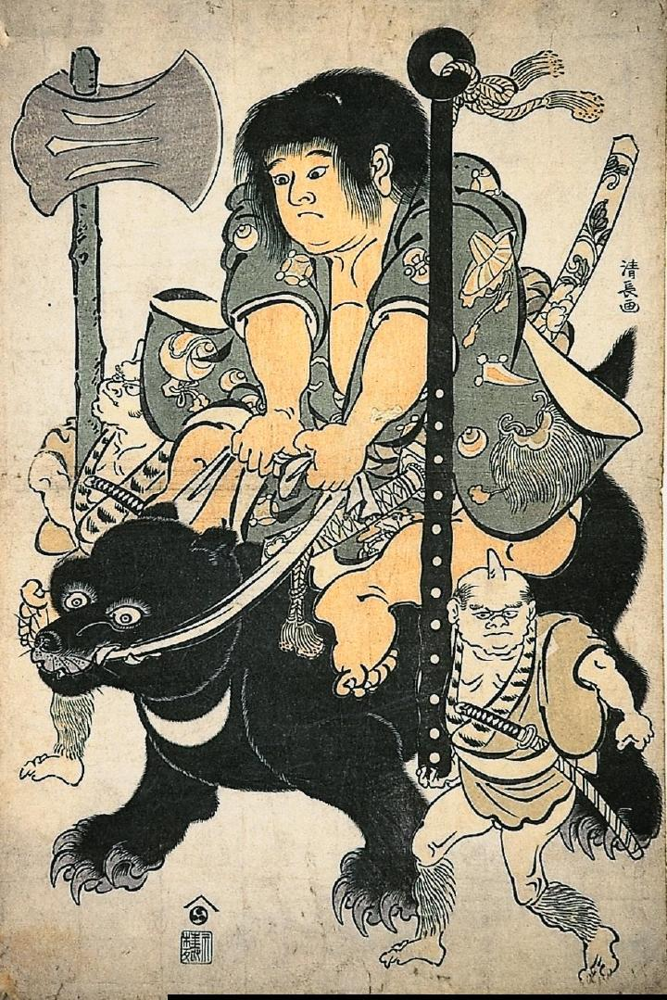

月の輪熊に乗る金太郎。左右には鉞と金棒を担いだ鬼が従っている。鬼は虎皮の襟がついた上衣と、毛皮の脚絆を身に付けている。
著作者：鳥居清長／出典：親書誌：A963_ferenchopp_0005：（金太郎；キンタロウ）／日付：2011／資源識別子：A963_ferenchopp_0005_0001_0000
Copyright (c)2010- International Research Center for Japanese Studies, Kyoto, Japan. All rights reserved.